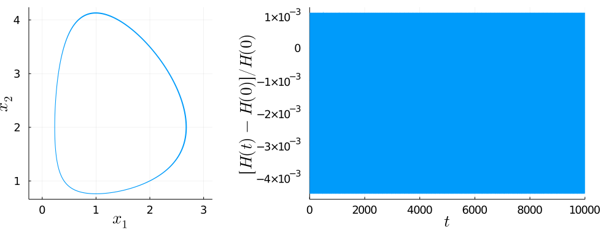

Lotka-Volterra 2d with SPARK Integrators
Lobatto-IIIA-IIIB Projection • Definition 1
GLRK(1)pLobattoIIIAIIIB(2)
Plots • Symplecticity • Tableau: TableauVSPARKLobattoIIIAIIIBProjection

GLRK(2)pLobattoIIIAIIIB(2)
Plots • Symplecticity • Tableau: TableauVSPARKLobattoIIIAIIIBProjection

GLRK(3)pLobattoIIIAIIIB(2)
Plots • Symplecticity • Tableau: TableauVSPARKLobattoIIIAIIIBProjection

GLRK(4)pLobattoIIIAIIIB(2)
Plots • Symplecticity • Tableau: TableauVSPARKLobattoIIIAIIIBProjection
LobattoIIIAIIIB(2)pLobattoIIIAIIIB(2)
Plots • Symplecticity • Tableau: TableauVSPARKLobattoIIIAIIIBProjection
DOMAIN ERROR: Simulation crashed in time step 38540.
LobattoIIIAIIIB(3)pLobattoIIIAIIIB(2)
Plots • Symplecticity • Tableau: TableauVSPARKLobattoIIIAIIIBProjection
DOMAIN ERROR: Simulation crashed in time step 216.
LobattoIIIAIIIB(4)pLobattoIIIAIIIB(2)
Plots • Symplecticity • Tableau: TableauVSPARKLobattoIIIAIIIBProjection
LobattoIIIAIIIB(5)pLobattoIIIAIIIB(2)
Plots • Symplecticity • Tableau: TableauVSPARKLobattoIIIAIIIBProjection
DOMAIN ERROR: Simulation crashed in time step 67476.
LobattoIIIBIIIA(2)pLobattoIIIAIIIB(2)
Plots • Symplecticity • Tableau: TableauVSPARKLobattoIIIAIIIBProjection

LobattoIIIBIIIA(3)pLobattoIIIAIIIB(2)
Plots • Symplecticity • Tableau: TableauVSPARKLobattoIIIAIIIBProjection
DOMAIN ERROR: Simulation crashed in time step 1. 
LobattoIIIBIIIA(4)pLobattoIIIAIIIB(2)
Plots • Symplecticity • Tableau: TableauVSPARKLobattoIIIAIIIBProjection
LobattoIIIBIIIA(5)pLobattoIIIAIIIB(2)
Plots • Symplecticity • Tableau: TableauVSPARKLobattoIIIAIIIBProjection
DOMAIN ERROR: Simulation crashed in time step 1. 
Lobatto-IIIB-IIIA Projection • Definition 1
GLRK(1)pLobattoIIIBIIIA(2)
Plots • Symplecticity • Tableau: TableauVSPARKLobattoIIIBIIIAProjection

GLRK(2)pLobattoIIIBIIIA(2)
Plots • Symplecticity • Tableau: TableauVSPARKLobattoIIIBIIIAProjection

GLRK(3)pLobattoIIIBIIIA(2)
Plots • Symplecticity • Tableau: TableauVSPARKLobattoIIIBIIIAProjection

GLRK(4)pLobattoIIIBIIIA(2)
Plots • Symplecticity • Tableau: TableauVSPARKLobattoIIIBIIIAProjection
LobattoIIIAIIIB(2)pLobattoIIIBIIIA(2)
Plots • Symplecticity • Tableau: TableauVSPARKLobattoIIIBIIIAProjection
LobattoIIIAIIIB(3)pLobattoIIIBIIIA(2)
Plots • Symplecticity • Tableau: TableauVSPARKLobattoIIIBIIIAProjection
DOMAIN ERROR: Simulation crashed in time step 1486.
LobattoIIIAIIIB(4)pLobattoIIIBIIIA(2)
Plots • Symplecticity • Tableau: TableauVSPARKLobattoIIIBIIIAProjection
LobattoIIIAIIIB(5)pLobattoIIIBIIIA(2)
Plots • Symplecticity • Tableau: TableauVSPARKLobattoIIIBIIIAProjection
DOMAIN ERROR: Simulation crashed in time step 95767.
LobattoIIIBIIIA(2)pLobattoIIIBIIIA(2)
Plots • Symplecticity • Tableau: TableauVSPARKLobattoIIIBIIIAProjection

LobattoIIIBIIIA(3)pLobattoIIIBIIIA(2)
Plots • Symplecticity • Tableau: TableauVSPARKLobattoIIIBIIIAProjection
DOMAIN ERROR: Simulation crashed in time step 2.
LobattoIIIBIIIA(4)pLobattoIIIBIIIA(2)
Plots • Symplecticity • Tableau: TableauVSPARKLobattoIIIBIIIAProjection
LobattoIIIBIIIA(5)pLobattoIIIBIIIA(2)
Plots • Symplecticity • Tableau: TableauVSPARKLobattoIIIBIIIAProjection
DOMAIN ERROR: Simulation crashed in time step 1. 
Lobatto-IIIA-IIIB Projection • Definition 2
GLRK(1)pModifiedLobattoIIIAIIIB(2)
Plots • Symplecticity • Tableau: TableauVSPARKModifiedLobattoIIIAIIIBProjection

GLRK(2)pModifiedLobattoIIIAIIIB(2)
Plots • Symplecticity • Tableau: TableauVSPARKModifiedLobattoIIIAIIIBProjection

GLRK(3)pModifiedLobattoIIIAIIIB(2)
Plots • Symplecticity • Tableau: TableauVSPARKModifiedLobattoIIIAIIIBProjection
GLRK(4)pModifiedLobattoIIIAIIIB(2)
Plots • Symplecticity • Tableau: TableauVSPARKModifiedLobattoIIIAIIIBProjection

LobattoIIIAIIIB(2)pModifiedLobattoIIIAIIIB(2)
Plots • Symplecticity • Tableau: TableauVSPARKModifiedLobattoIIIAIIIBProjection
DOMAIN ERROR: Simulation crashed in time step 38540. 
LobattoIIIAIIIB(3)pModifiedLobattoIIIAIIIB(2)
Plots • Symplecticity • Tableau: TableauVSPARKModifiedLobattoIIIAIIIBProjection
DOMAIN ERROR: Simulation crashed in time step 168.
LobattoIIIAIIIB(4)pModifiedLobattoIIIAIIIB(2)
Plots • Symplecticity • Tableau: TableauVSPARKModifiedLobattoIIIAIIIBProjection
LobattoIIIAIIIB(5)pModifiedLobattoIIIAIIIB(2)
Plots • Symplecticity • Tableau: TableauVSPARKModifiedLobattoIIIAIIIBProjection
DOMAIN ERROR: Simulation crashed in time step 41610.
LobattoIIIBIIIA(2)pModifiedLobattoIIIAIIIB(2)
Plots • Symplecticity • Tableau: TableauVSPARKModifiedLobattoIIIAIIIBProjection

LobattoIIIBIIIA(3)pModifiedLobattoIIIAIIIB(2)
Plots • Symplecticity • Tableau: TableauVSPARKModifiedLobattoIIIAIIIBProjection
DOMAIN ERROR: Simulation crashed in time step 31.
LobattoIIIBIIIA(4)pModifiedLobattoIIIAIIIB(2)
Plots • Symplecticity • Tableau: TableauVSPARKModifiedLobattoIIIAIIIBProjection
LobattoIIIBIIIA(5)pModifiedLobattoIIIAIIIB(2)
Plots • Symplecticity • Tableau: TableauVSPARKModifiedLobattoIIIAIIIBProjection
DOMAIN ERROR: Simulation crashed in time step 11662.
Lobatto-IIIB-IIIA Projection • Definition 2
GLRK(1)pModifiedLobattoIIIBIIIA(2)
Plots • Symplecticity • Tableau: TableauVSPARKModifiedLobattoIIIBIIIAProjection

GLRK(2)pModifiedLobattoIIIBIIIA(2)
Plots • Symplecticity • Tableau: TableauVSPARKModifiedLobattoIIIBIIIAProjection

GLRK(3)pModifiedLobattoIIIBIIIA(2)
Plots • Symplecticity • Tableau: TableauVSPARKModifiedLobattoIIIBIIIAProjection
GLRK(4)pModifiedLobattoIIIBIIIA(2)
Plots • Symplecticity • Tableau: TableauVSPARKModifiedLobattoIIIBIIIAProjection

LobattoIIIAIIIB(2)pModifiedLobattoIIIBIIIA(2)
Plots • Symplecticity • Tableau: TableauVSPARKModifiedLobattoIIIBIIIAProjection

LobattoIIIAIIIB(3)pModifiedLobattoIIIBIIIA(2)
Plots • Symplecticity • Tableau: TableauVSPARKModifiedLobattoIIIBIIIAProjection
DOMAIN ERROR: Simulation crashed in time step 374.
LobattoIIIAIIIB(4)pModifiedLobattoIIIBIIIA(2)
Plots • Symplecticity • Tableau: TableauVSPARKModifiedLobattoIIIBIIIAProjection
LobattoIIIAIIIB(5)pModifiedLobattoIIIBIIIA(2)
Plots • Symplecticity • Tableau: TableauVSPARKModifiedLobattoIIIBIIIAProjection
DOMAIN ERROR: Simulation crashed in time step 27006.
LobattoIIIBIIIA(2)pModifiedLobattoIIIBIIIA(2)
Plots • Symplecticity • Tableau: TableauVSPARKModifiedLobattoIIIBIIIAProjection

LobattoIIIBIIIA(3)pModifiedLobattoIIIBIIIA(2)
Plots • Symplecticity • Tableau: TableauVSPARKModifiedLobattoIIIBIIIAProjection
DOMAIN ERROR: Simulation crashed in time step 31. 
LobattoIIIBIIIA(4)pModifiedLobattoIIIBIIIA(2)
Plots • Symplecticity • Tableau: TableauVSPARKModifiedLobattoIIIBIIIAProjection
LobattoIIIBIIIA(5)pModifiedLobattoIIIBIIIA(2)
Plots • Symplecticity • Tableau: TableauVSPARKModifiedLobattoIIIBIIIAProjection
DOMAIN ERROR: Simulation crashed in time step 16981.